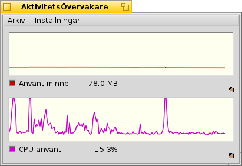

Svenska
Svenska Français
Français Deutsch
Deutsch Italiano
Italiano Русский
Русский Español
Español 日本語
日本語 Українська
Українська 中文 ［中文］
中文 ［中文］ Português
Português English
English AktivitetsÖvervakare
AktivitetsÖvervakare
| Deskbar: | ||
| Plats: | /boot/system/apps/AktivitetsÖvervakare | |
| Inställningar: | ~/config/settings/ActivityMonitor settings |
Du kan övervaka systemresurser genom att starta AktivitetsÖvervakaren och aktivera de funktioner du är intresserad av.
Genom att högerklicka i fönstret kan du slå av eller på visning av olika resurser:
Använt minne, Buffertminne, Växlingsutrymme, CPU användning, Nätverk mottagning, Nätverk sändning, Sidfel, Blockbuffert, Semaforer, Portar, Trådar, Processer, Aktiva program, Obearbetad urklipp, Text urklipp, Medianoder.
Under grafen visas en förklaring, som kan gömmas med valet Hide Legend i kontextmenyn. Du kan ändra färg på kurvorna och grafens bakgrund genom att dra färger ur valfri färgväljare, exempelvis Icon-O-Matic.
Om det blir ont om utrymme kan man lägga till fler vyer från menyn.
Menyn öppnar en panel där man kan ändra uppdateringsintervallet.
Varje vy har ett eget Replikanthandtag och kan därför placeras fritt, exempelvis på Skrivbordet.